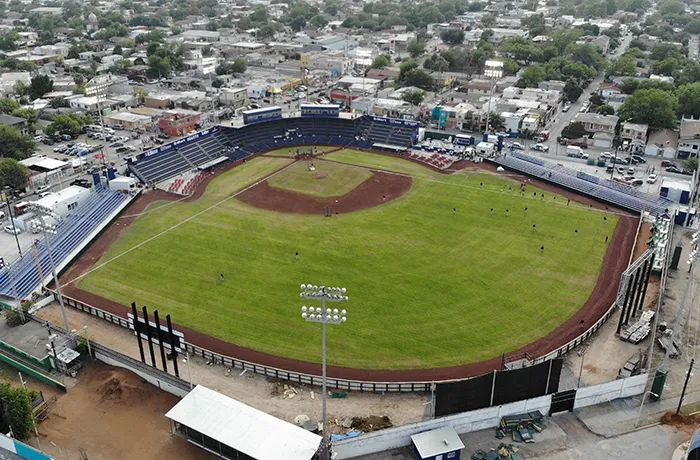
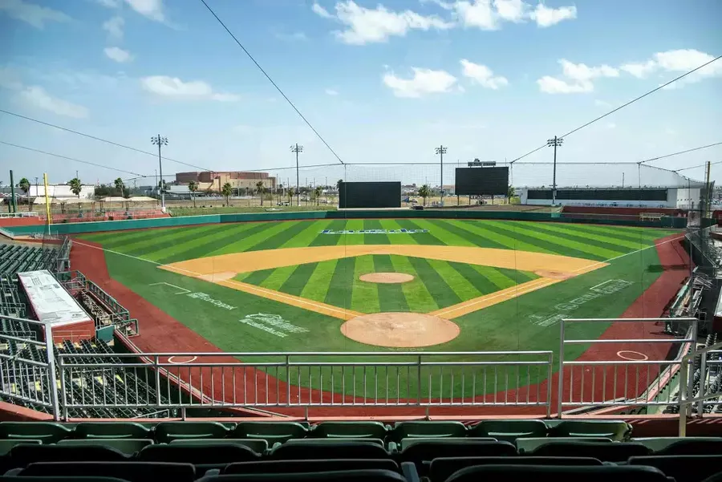
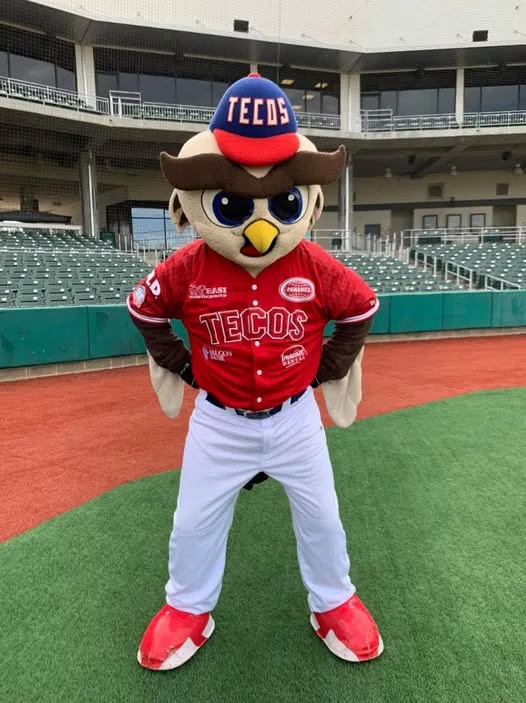

Equipo
Los Tecolotes de los Dos Laredos son el único equipo de la LMB que juega como local en dos países: en Nuevo Laredo, Tamaulipas, y en Laredo, Texas. En 2025 cumplieron 85 años de historia y 40 como equipo binacional.
Historia
Nacieron en 1940 como La Junta de Nuevo Laredo, por la Junta Federal de Mejoras Materiales que los patrocinaba. En 1949 se convirtieron en los Tecolotes: se decía que con la poca luz que tenía su parque, solo los tecolotes podían jugar de noche.
En 1985 empezaron a jugar en Nuevo Laredo y en Laredo, Texas, y fueron el primer equipo de la liga en hacerlo en dos países. Después de 2003 la franquicia se mudó a Tijuana, donde nacieron los Toros, y los Tecolotes regresaron como equipo binacional en 2018.
Estadios
Tienen dos casas: el Parque La Junta, en Nuevo Laredo, inaugurado en 1947 y propiedad de la ciudad, y el Uni-Trade Stadium, en Laredo, Texas, que abrió en 2012 y tiene unos 6 mil lugares.


Mascota
Tico, el Teco, es un tecolote que usa la gorra y el uniforme rojo del equipo. Desde 2024 lo acompaña Don Tico, la versión veterana del personaje.

Leyendas
- 1953
Adolfo Luque. El cubano, que había ganado 194 juegos en Grandes Ligas, fue el mánager de los títulos de 1953 y 1954.
- 1953
Ramiro Cuevas. El 14 de agosto de 1953 lanzó el primer juego perfecto en la historia de la LMB.
- 1989
José "Zacatillo" Guerrero. Mánager del título de 1989, el primero como equipo binacional.
- 2026
Zoilo Almonte. Líder del equipo con 23 jonrones y 74 carreras producidas.
Temporada 2026
Con el dominicano Félix Fermín como mánager terminaron con 36 victorias y 57 derrotas, y no alcanzaron los playoffs. Venían de dos años muy buenos: en 2023 tuvieron el mejor récord del norte, y en 2023 y 2024 llegaron a la final de la zona.